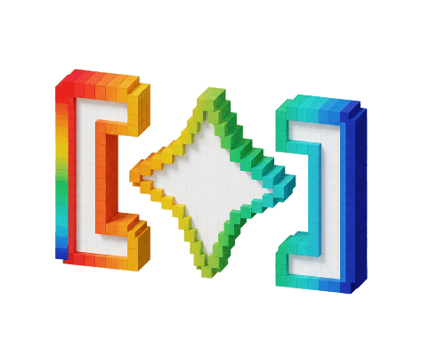
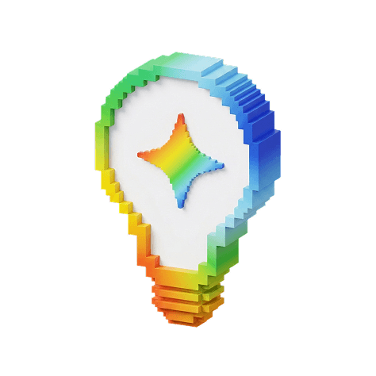

GoogleStudentAmbassador2026 Batch 2
Satu angkatan. Banyak cerita.
Dari langkah pertama sampai momen tak terlupa.
Kenangan
inaugurasi, disimpan untuk kita.
Inauguration memories · Oktober 2026
Sebuah hari.
Segudang kenangan.
Jakarta mempertemukan kita.
Sisanya, jadi cerita yang ingin
diulang.
- Kenangan tersimpan
- 28
- Video untuk diputar lagi
- 9
- Chapter perjalanan
- 5
Dari berangkat bareng,
sampai enggan pulang.
Lima chapter dari satu perjalanan yang sama.
Perjalanan kita
Bukan cuma tentang tempat yang dikunjungi. Tapi juga orang-orang yang ada di samping kita.
GSA 2026 Rewind:
The moment we became us.
Satu tombol play. Kembali ke hari itu.
Our little wall of memories
Ada cerita di
setiap fotonya.
Kenangan yang kita gantung di sini.
Ketuk satu, buka lagi
ceritanya.
Cari berdasarkan judul, lokasi, deskripsi, atau tag. Hasil langsung berubah di bawah.
28 kenangan untuk dibuka kembali
Sedikit panduan.
Selebihnya, nikmati.
Bagaimana cara membuka foto dan video?
Klik atau ketuk polaroid di galeri. Foto akan terbuka utuh, bersama cerita, lokasi, dan tanggal yang tersedia. Polaroid dengan ikon play berisi video.
Bisa mencari momen atau tempat tertentu?
Bisa. Ketik nama, tempat, atau kata yang kamu ingat di kolom pencarian. Gunakan filter chapter untuk membuka bagian perjalanan tertentu.
Bagaimana berpindah ke kenangan berikutnya?
Gunakan tombol panah di penampil foto, atau tombol panah kiri dan kanan pada keyboard. Tekan Escape untuk menutup dan kembali ke galeri.
Apa yang ada di dalam arsip ini?
Foto dan video perjalanan GSA 2026 Batch 2: MRT Jakarta, inaugurasi MGP Space, Google Indonesia HQ, kuliner Blok M, hingga cerita malam dan perjalanan kandidat Steven.
Di mana saya bisa mengenal program GSA?
Kunjungi website Google Student Ambassador Indonesia ↗ untuk informasi program.